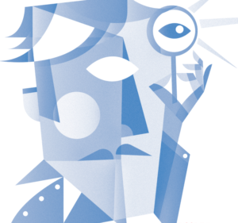
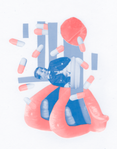

{Fanzine#1} Un segnale nel rumore

Questo è il primo articolo della nostra fanzine dedicata ai MICROBI, il tema che abbiamo affrontato a Scienceground 1.5. Trovi gli altri articoli e l’indice della fanzine qui:
- Un segnale nel rumore
- Gioco in società: il Dottor Semmelweis
- Gli infetti della Terra
- Intessere mondi
- That’s symbiosis, baby: arte, biologia e altre storie
[Illustrazioni di Federico Rossini, Giulia Maria Cavaliere]
Scienceground 1.5 a Festivaletteratura 2019, interamente dedicato ai microbi, si è aperto con una conversazione che riprendeva quella di chiusura dell’edizione precedente, dedicata ai dati. Dopo un laboratorio improvvisato di presa dati e valutazione della loro significanza statistica, così introducevamo il nuovo arco tematico.
Allacciate le cinture di sicurezza: si entra nel programma di Scienceground 1.5. Cosa c’entrano i dati con i microbi? Come anello di congiunzione abbiamo scelto un articolo scientifico che parla dell’uso della statistica da parte di Ignác Fülöp Semmelweis, un medico ungherese che nella prima metà dell’800 lavorava in una clinica di Vienna sotto il mediocre ma potente professor Johann Klein. Nei turni di Klein le partorienti morivano in percentuali altissime, tanto che chi non poteva permettersi di partorire in casa (donne sole e povere, prostitute) faceva a gara pur di arrivare entro il turno precedente. Semmelweis studiò questo fenomeno metodicamente, addirittura maniacalmente, formulando varie ipotesi.
A posteriori è facile puntare il dito nella direzione giusta, isolare la causa. Ma calatevi lì, in un contesto in cui tutto succedeva contemporaneamente, tra mille pressioni. Proprio come voi qui stasera, tutti insieme intenti alle vostre misure: certo non eravate indipendenti e ognuno identicamente distribuito, come vuole la curva gaussiana e la legge dei grandi numeri con cui abbiamo tentato di fare una rozza analisi dei dati. Probabilmente c’era anche un po’ di pressione sociale: magari qualcuno si è vergognato ad alzare la mano e dichiarare il suo valore fuori norma? Una misura più attendibile si sarebbe potuta realizzare mettendovi a disposizione una cabina chiusa, dandovi il tempo per fare le misure con calma, anonimamente, etc. Vale a dire: purificando la vostra esperienza, nella speranza di isolare un fatto.

Semmelweis certo non operava in un ambiente purificato: come la maggior parte dei medici oggi, si trovava a fare ricerca e pratica clinica contemporaneamente, cercando di trovare una causa singola dentro un pagliaio di concause e fattori confondenti. La sua indagine è raccontata nel secondo intervento in questa zine. Spoiler: Semmelweis ipotizzò che i medici che venivano dalle camere autoptiche infettassero le puerpere con qualche sorta di “particella cadaverica”. Considerate che all’epoca l’igiene era molto superficiale e che la teoria dei germi è ancora a venire, non c’era una teoria condivisa del contagio, non esisteva il concetto che qualcosa di extracorporeo potesse trasmettersi: spiriti e anime erano monopolio della religione.
Sembrerebbe che a seguito delle intense igienizzazioni “rituali” delle mani che Semmelweis introdusse le morti diminuirono sensibilmente, come riportato nel suo libro Etiology, Concept and Prophylaxis of Childbed Fever. Siamo però sicuri che questa osservazione non fosse affetta da un suo pregiudizio cognitivo? Secondo l’articolo che abbiamo sotto mano (Noakes, 2008) «this statistical analysis supports Semmelweis’s hypothesis that “the cadaveric particles adhering to the hand had caused the preponderant mortality in the first Clinic”». La prima grande vittoria epidemiologica della statistica? Non ancora. Notate come questa affermazione sia al positivo: afferma un’osservazione, e non ne nega la negazione. Abbiamo discusso però poco fà che la statistica arriva semmai a delimitare un dubbio, non a supportare un’ipotesi. Per esempio, il test statistico del p-value porta a dire con una certa probabilità che non è da escludersi un’ipotesi, il che non vuol dire che l’ipotesi sia confermata. Da manuale, la statistica sarebbe da usare tra mille precauzioni e circostanze. Di fatto nella pratica quotidiana ci si arrangia come si può, navigando in un sistema che non ha un vero e proprio metodo scientifico unico e codificato, ma ne ha tanti, a volte conflittuali.
Semmelweis non ebbe successo, come racconta Louis Ferdinand Céline (all’epoca, Destouches) nella sua tesi di dottorato (Céline, 1924). Spoiler: Semmelweis impazzì, e Céline è abile a selezionare i fatti per narrare la storia di un uomo disperato che lotta contro un sistema che rifiutava la sua scoperta. Tuttavia anche questa prospettiva è controversa, perché anche se osteggiato da una parte del mondo accademico, aveva dei sostenitori, altrove l’igienizzazione delle mani era nota e praticata, e inoltre ai tempi nella comunità scientifica esisteva una discussione viva sui principi dell’igiene. In Francia già erano forti i movimenti di sanità pubblica che spingevano per creare città più vivibili. Questo movimento spesso veicolava le sue battaglie in termini politici, come di una lotta che legava la ricchezza monetaria con l’accesso alla salute. È in questo contesto che quello che potremmo chiamare l’anti-Semmelweis, ossia Louis Pasteur, potrà “scoprire” il microbo. Il microbo già era stato osservato al microscopio ma non ne era stata compresa la funzione e il legame con la malattia in maniera inequivocabile. Invece di indire una lotta solitaria contro l’establishment, Pasteur si alleò con tutti, anche spettacolarizzando la sua scoperta e soprattutto consentendo una rinarrazione dell’igiene, non più come lotta di classe, ma come guerra contro un nemico comune – i microbi. Questo consentì quello scarto che sbloccò un cambiamento già in potenza, se addiritura non già in atto (Latour, 2001). Parleremo di Pasteur come l’anti-Semmelweis nel terzo contributo.
Sulla morte di Semmelweis ci sono varie ipotesi. Quella di Céline è molto romanzata: ormai marginalizzato, avrebbe fatto irruzione in sala operatoria e si sarebbe punto con strumenti infetti, morendo dello stesso morbo che stava cercando di combattere. Sappiamo però che nell’800 in Europa esisteva una malattia endemica, taciuta, ma che colpiva più del 10% della popolazione europea. Il biografo di Semmelweis, Codell Karter, nel riconoscere la difficoltà di una diagnosi postuma, accenna alla possibilità che si potesse trattare della terza fase della sifilide (Carter, 2017).
La sifilide era la malattia delle città promiscue. Una malattia venerea che coinvolgeva l’aristocrazia colta, e quindi oggetto di tabù: a differenza di peste e colera non è narrata nei grandi romanzi storici, ma emerge nei diari e nelle corrispondenze private. Chiamata “la grande imitatrice”, la sifilide ha una diagnosi molto difficile perché i suoi sintomi possono venire scambiati con quelli di molte altre malattie. Ad una prima fase in cui si manifesta una lesione esterna, di solito ai genitali, segue una fase latente in cui il morbo lavora dentro il corpo, anche per un tempo molto prolungato, per poi slatentizzarsi di nuovo in una terza fase che porta spesso alla demenza e alla follia. Molte personalità sono state afflitte dalla sifilide, tra queste ci sono prove sostanziali relative a Beethoven, Schubert, Nietzsche, Lincoln, Al Capone etc. Addirittura, Simon Wiesenthal, il cacciatore di nazisti, ipotizzava che Adolf Hitler potesse essere stato infettato durante un rapporto con una prostituta ebrea a Vienna, il che getterebbe un’ombra sinistra sul delirio nazista (Hayden, 2003).
Forse però il primo “sifilitico famoso” europeo sarebbe stato Cristoforo Colombo. Nelle Americhe gli Europei hanno portato l’influenza, la malaria, il tifo, il colera etc, sterminando il 95% della popolazione, di spada o di infezioni. Siamo stati ripagati con questo corpuscolo, Treponema pallidum, che si sarebbe imbarcato assieme alle schiave del sesso che i marinai si portavano dietro. Vediamo allora come parlano della sifilide i primi del Vecchio Mondo che cercavano di darne una spiegazione (Fleck, 2012): «Non solo l’origine di questa malattia è tracciabile alla posizione degli astri, ma la sua manifestazione continua ad essere fomentata soprattutto nel segno dello scorpione, che governa i genitali». La malattia viene interpretata nel segno dell’astrologia. Questo oggi può suscitare ilarità, ma non dobbiamo prenderla sotto gamba: questa frase contiene una verità, che la malattia è venerea, un’osservazione importantissima dato che questa era la prima malattia nota che si trasmetteva solamente per via sessuale. Quindi questa frase contiene un fatto e lo comunica imitando la scienza dell’epoca, l’astronomia, con le parole del discorso popolare intorno a quel sapere, l’astrologia. Poco fà abbiamo parlato dei modelli sottostanti l’interpretazione di un dato: ecco, l’astronomia era il modello dell’epoca su cui costruire ogni ipotesi scientifica. Il dato è che c’è la sifilide, che un certo numero di persone muoiono, che ha questa eziologia etc. Per il resto è fisiologico che i coevi raffigurassero la malattia in termini astrologici.
Noi vogliamo chiederci: «Qual è il modello nascosto, oggi?». Non possiamo infatti permetterci di credere che la scienza di oggi sia quella che si è finalmente liberata in maniera definitiva di modelli di riferimento, ideologie, schemi interpretativi. Aleggia sempre il pregiudizio che i nostri avi, per quanto intelligenti, avessero una visione parziale, ma ora noi abbiamo raggiunto mete di conoscenza stabile e oggettiva. Questo atteggiamento può essere pericoloso. La nostra proposta è di essere più prudenti, e di rifiutare sistematicamente l’idea di un sapere incrementale che procede solo per aggiunta. Pensiamo per esempio alla microbiologia: come sta cambiando, a seconda di quali esigenze? È diventata famosa la frase secondo cui siamo composti più da batteri e da microbi che non da cellule del nostro stesso corpo. Tuttavia non sappiamo ancora come queste entità lavorano di concerto tra loro e con le nostre cellule, e quindi viviamo in un momento interessante e di grande incertezza.
Facciamo ora un altro salto spazio-temporale: torniamo nelle Americhe prima ancora di Colombo. Cosa ne sapevano i nativi amerindi di sifilide? Tantissimo, come racconta l’antropologo con formazione da biologo César Henrique Giraldo Herrera (Giraldo Herrera, 2018), della cui tesi di dottorato proponiamo una sintesi estrema in questo volume. Tuttavia la malattia è arrivata in Europa priva del corpo di conoscenze delle popolazioni indigene. Questo perché i nostri avi sono andati alla “scoperta” portandosi dietro i loro modelli concettuali, in particolare traducendo le conoscenze naturalistiche dei nativi americani con la parola “spiriti”. Ma “spirito” è una parola cristiana che veicola un messaggio astratto. Indipendentemente dal fatto che si creda o no alla sua esistenza, io penso che pochi tra noi pensino nel loro quotidiano allo Spirito Santo come una cosa percepibile, che ha consistenza ed effetti materiali. Ma non era così per gli sciamani! Loro gli spiriti li sentivano davvero, avevano odori, sapori, in certe condizioni erano visibili. Gli spiriti erano dentro il loro corpo, erano nelle infezioni, nelle pratiche curative, nelle fermentazioni alimentari, nei cadaveri, si trasferivano ad altri animali, alle piante, alle acque. C’erano zone del bosco, o periodi dell’anno, o momenti di caccia, o prede abitate da certi spiriti. Insomma, la proposta è che meglio di spiriti si potrebbe tradurre questo concetto con “microbi”.
Forse allora gli sciamani erano i primi grandi microbiologi. Il mito panamericano più importante, la leggenda del Sole e della Luna, racconta tra le altre cose di un dio che infonde la sifilide, e della battaglia di queste popolazioni per combattere l’infezione. Uomini che diventano alberi (perché sviluppano paresi), uomini che diventano rane (dermatiti), etc. Questo mito trasmette anche alcune tecniche con cui gli amerindi combattevano la sifilide. Tra queste, la capacità di certe tribù di infettarsi con un altro sifiloide più tenue, la pinta, che immunizzava dalla sifilide: in parole povere si vaccinavano.

Dov’è finita questa conoscenza antica? Non ha solcato i mari. I nostri antenati sono stati un po’ arroganti, e treponema è stato decontesualizzato e portato qua come fosse solo un semplice oggetto, e non una pratica complessa. Un primo esempio dell’attitudine riduzionista che poi si è riverberata nelle scienze moderne, decretandone indubbi successi e altrettanto indubbie problematicità. Tuttavia le conoscenze sciamaniche sono a volte riemerse. Negli anni ’70 alcune linee di ricerca hanno indagato la pinta come possibile vaccino per la sifilide (Thatcher, 1969), che però sono molto difficili da tenere in coltura. La ricerca non ha portato al vaccino sperato .
Come mai questa linea di ricerca promettente è terminata? Qualcuno direbbe che c’è stato un complotto internazionale. Facile escamotage, ma non è così. O meglio: il complotto c’è, ma non è di qualcuno che ha ordito qualcosa: sta dentro le nostre teste, nei nostri schemi mentali, nel modello, sempre lui, che è ancora là, non ce ne siamo mai liberati, ci accompagna sempre. È lo stesso modello che a partire dal movimento igienista in Francia ha portato alla giusta e necessaria sanitizzazione delle città, a condizioni di vita che hanno migliorato enormemente la vita dell’occidente industriale. Questo modello è stato poi esportato con una nuova forma di colonialismo della cooperazione nei paesi ora cosiddetti “in via di sviluppo”. La framboesia si sarebbe estinta nell’opera di igienizzazione condotta dalla World Health Organization, quindi nel tentativo di sviluppare un progetto di igienizzazione del mondo.
Oggi la sifilide è riemergente a livello globale , un ritorno che si intreccia con un altro problema globale gravissimo, forse tanto grave quanto il cambiamento climatico: quello dello sviluppo delle resistenze agli antibiotici. Ad oggi la penicillina è ancora efficace contro Treponema pallidum: però sono stati registrati ceppi resistenti all’azitromicina, un farmaco di seconda linea (Stamm, 2015). Già Alexander Fleming, lo scopritore della penicillina, avvertiva durante la sua lezione Nobel: «Se questo farmaco dovesse entrare nelle farmacie, a uso e consumo dei consumatori, saremmo in pericolo perché il rischio è che qualcuno ne abusi e faccia in modo che il batterio contro cui sta lottando sviluppi una resistenza. E noi allora perderemmo il farmaco». Noi stiamo perdendo gli antibiotici, e gli antibiotici sono alla base di tutta la medicina moderna, dalla cura delle malattie infettive alla chirurgia (Davies, 2013).
Questa solo una fetta dei temi affrontati… Chiudiamo questo volume con un’intervista al biologo evoluzionista Scott Gilbert, su arte, scienza, business, curiosità, narrazioni e tant’altro. Speriamo di avervi contagiato a sufficienza!
Bibliografia
(Céline, 1924) L.-F. Céline, La Vie et l’œuvre de Philippe Ignace Semmelweis, tesi di dottorato (trad. it. Il Dottor Semmelweis Adelphi, 1975).
(Fleck, 2012) L. Fleck, Genesis and development of a scientific fact, University of Chicago Press, 2012.
(Giraldo Herrera, 2018) C. E. Giraldo Herrera, Microbes and other shamanic beings, Palgrave, 2018.
(Hayden, 2003) D. Hayden, Pox: Genius, madness, and the mysteries of syphilis, Basic Books, 2003.
(Latour, 2001) B. Latour, Pasteur: guerre et paix des microbes; suivi de Irréductions, Paris: La découverte, 2001.
(Noakes, 2008) T. D. Noakes, et al. “Semmelweis and the aetiology of puerperal sepsis 160 years on: an historical review”. Epidemiology & Infection 136.1 (2008): 1-9.
(Stamm, 29015) L. V. Stamm, “Syphilis: antibiotic treatment and resistance.” Epidemiology & Infection 143.8 (2015): 1567-1574.
(Thatcher, 1969) R. W. Thatcher, “The search for a vaccine for syphilis. An epidemiological approach”. British Medical Journal 45 (1): 10, 1969.